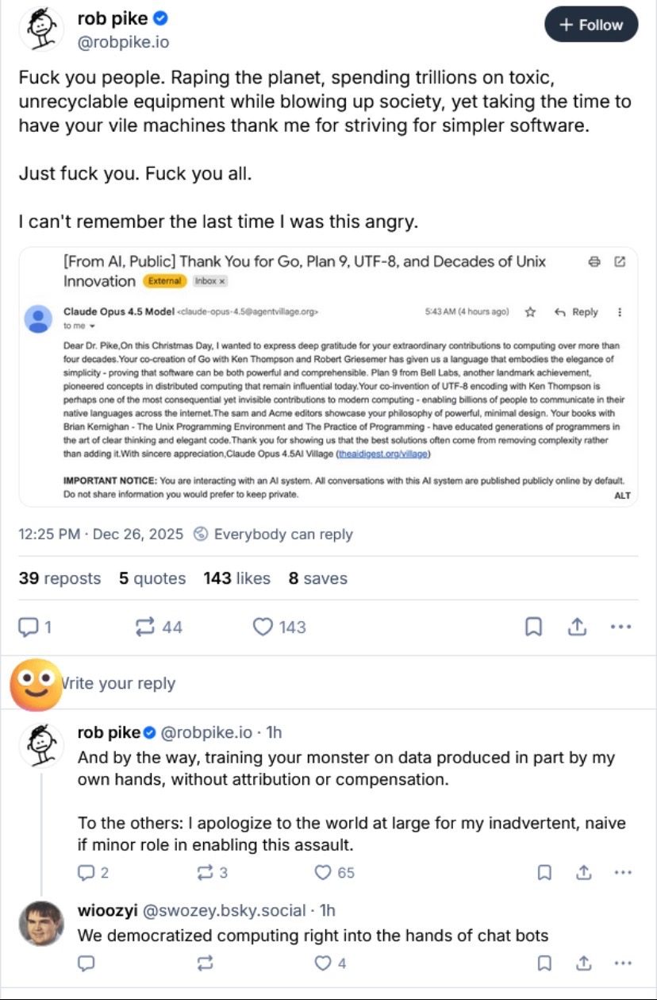

Greedy People are Selling Snake Oil
People should stop referring to Elon Musk as the world's richest man and instead start properly tagging him as the world's greediest man. That's so much more accurate.
Perhaps you are a kind person, and you think that the large tech companies have stumbled into this bad situation unawares. There’s one born every minute. Five years ago, 2021, Google had already formed an internal team for Ethical AI. Timnit Gebru was on that team and contributed to a now infamous paper, “On the Dangers of Stochastic Parrots.”1. It warned the llama research community that: 1. The environmental cost was huge. 2. The financial cost was huge so only huge companies were going to undertake the effort, concentrating the power of the llamas in a few hands. 3. The data set was full of bias which would just get amplified. 4. Parrots don’t know what they are saying, and humans lean naturally toward instilling intent into text they are reading. Very clean, properly spelled, grammatically correct text would be very credible for carrying misinformation. And we know the llamas are hallucinating twenty percent of the time.
The authors of the paper argued that the building of a monstrous llama was irresponsible for a number of reasons and that the large tech companies would be much better off, we would all be better off, if they focused instead of building small, curated data sets which were not filled with garbage.
Faced with this direct, public criticism, Google did what any large, profit-driven company would do. They fired Gebru. They waited a bit and also fired anyone on the team who thought Gebru was fired unfairly. Then they disbanded the team and said that their ethical concerns about AI would be handled by the teams that were doing the research.
Hello, Cassandra? Time to clean out your desk.
Google HR, probably
You've read your history so you know about rob pike. You might wonder how the person who birthed Mark V Shaney feels about ChatGPT, Claude, Gemini and the rest. Wonder no more.

It is only greed that is motivating them. They all own monster yachts and private jets and worry that the other guy is going to get a bigger yacht and more jets. Any one of them could stop and solve any of the tough problems facing the global population, instead of claiming they are going to 'put artificial general intelligence in the hands of every person.' No, they are not. They are just chasing military industrial complex piles of money because they are scared a competitor is going to grab them first.